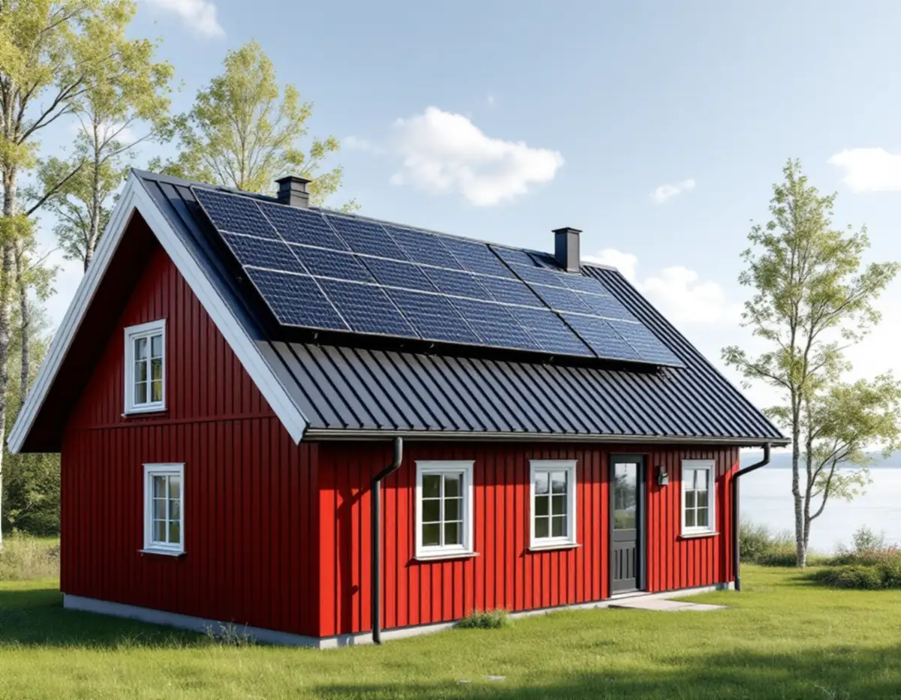
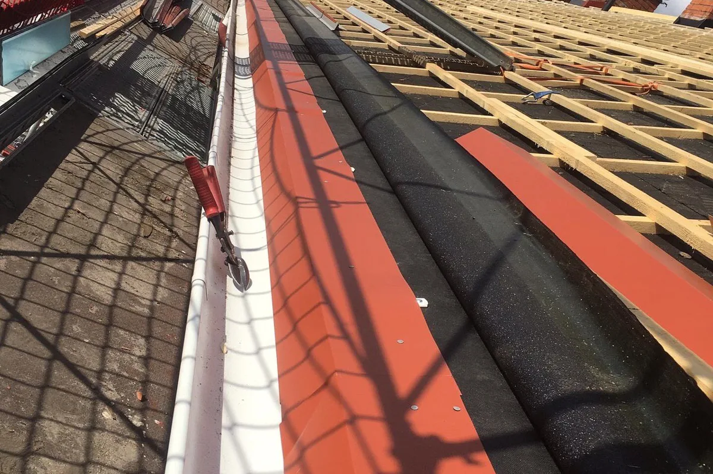

Platsbesök
Vi tittar på tak, rännor och stuprör och på var vattnet tar vägen på tomten.
På Mälaröarna rinner dagvattnet ut i vattendrag som också används för dricksvatten och bad, och kommunen är inte skyldig att ta emot dagvatten från fastigheterna. Det gör takets plåt och avvattning till mer än en detalj. Geal Entreprenad AB har egna plåtslagare som lagar och byter rännor, stuprör, beslag och plåttak på Ekerö, Färingsö och öarna runt omkring, med gratis platsbesök och skriftligt kostnadsförslag.

Ekerö kommun förklarar att dagvatten är regn- och smältvatten som rinner över gräs, asfalt och tak, och att det kan ledas bort via diken eller ledningar eller tas om hand direkt på fastigheten. Det senare kallas lokalt omhändertagande av dagvatten, LOD. Kommunen skriver också att den inte är skyldig att ta emot dagvatten från fastigheter och att LOD är ett bra sätt att ta hand om vattnet.
Kommunen påminner om att dagvattnet går direkt ut i vattendrag som vi sedan tar dricksvatten från eller badar i. När det blir stopp i en brunn ute på gatan är det vägföreningen som ansvarar för underhållet, inte kommunen.
För ett hus på Ekerö betyder det att stuprörens nedre del är lika viktig som rännan på taket. Vi ser till att varje stuprör slutar i en utkastare, ett ränndalsstycke ut på marken eller en regntunna, och att vattnet leds bort från grunden och inte mot grannens tomt.

Kommunen skriver att solenergi är bra att planera för när du bygger nytt eller lägger om taket, och att solceller på taket vanligtvis inte kräver bygglov. Bygglov krävs om detaljplanen anger det, och om fastigheten ligger inom detaljplan i ett område för totalförsvarets riksintressen eller i särskilt värdefulla byggnader och områden. Påverkar anläggningen bärande konstruktion eller brandskydd väsentligt krävs en bygganmälan. För Lovö skriver kommunen att Försvarsmakten tillfrågas i bygglovsärenden och ofta är negativ till solceller.
Boverket nämner otäta infästningar för solceller som en av orsakerna till att regn läcker in genom tak, och skriver att du behöver kontrollera att taket klarar den nya belastningen. På ett falsat plåttak fästs panelerna ofta med klämmor i falsarna, medan andra lösningar kräver hål genom plåten. Vi bedömer vilket som passar taket, och om plåten ändå ska bytas är det klokt att göra det innan panelerna monteras. Läs mer under solceller på taket.
Efter ändringarna i plan- och bygglagen räknar Ekerö kommun skärmtak till den bygglovsbefriade potten för tillbyggnader. En lovfri komplementbyggnad får enligt kommunen ha en taknockshöjd på högst 4 meter inom detaljplan och 4,5 meter utanför. Det ger förråd, garage och carportar med låga tak, och plåt är ett av de material som fungerar på låg lutning.
Låga tak ställer egna krav. Boverket skriver att utvändig takavvattning kan få problem med att det fryser i rännor och stuprör, och att stuprör som går ner till marken kan skadas av fordon och liknande. Vid en carport placerar vi därför stupröret där det inte är i vägen för bilen, och på ett förråd ser vi till att plåten har tillräckligt fall och en droppkant som släpper vattnet utanför väggen.
Komplementbyggnader och tillbyggnader närmare gränsen än 4,5 meter kräver skriftligt medgivande från grannarna, annars behövs bygglov.
Kommunen har gjort en ny bedömning av sina särskilt värdefulla byggnader och områden och visar dem i Ekerökartan. Där kan du inte tillämpa de ändrade byggreglerna. För fasadändringar på villa och fritidshus, som byte av taktäckning, krävs bygglov om fastigheten ligger i ett område som bedömts som särskilt värdefullt.
Boverket beskriver samma sak från andra hållet: det krävs i regel varken bygglov eller anmälan för att ändra fasad eller tak på ett småhus, men utökad lovplikt kan gälla inom särskilt värdefulla områden och inom område för totalförsvaret. Ändringen ska alltså vara varsam även där den är lovfri. Mer om tak på Mälaröarna finns under takläggare på Ekerö.
Vi tittar på tak, rännor och stuprör och på var vattnet tar vägen på tomten.
Ekerökartan visar om fastigheten ligger i ett särskilt värdefullt område eller nära totalförsvarets riksintresse.
Plåt, rännor, stuprör och eventuella solcellsförberedelser står var för sig i ett skriftligt kostnadsförslag.
Material och ställning planeras efter vägen fram till huset.
Plåten bockas och monteras med fall, droppkanter och utkastare som leder vattnet bort från grunden.
Vi går runt huset tillsammans och visar var vattnet hamnar.
Att reparera, rengöra eller byta ut plåttak, hängrännor och stuprör ger rotavdrag i ett småhus enligt Skatteverket, och det gäller även ett fritidshus som du äger och använder som bostad. Ställning som monteras i samband med arbetet ingår.
Avdraget är högst 30 procent av arbetskostnaden, högst 50 000 kr per person och år och högst 75 000 kr tillsammans med rutavdrag. Material och resor ingår inte. Geal gör avdraget direkt på fakturan.
Takets storlek och form, antalet stuprör och hur vattnet ska tas om hand på tomten, om plåten ska förberedas för solceller och hur lätt det är att komma fram med material och ställning. Efter ett gratis platsbesök får du ett skriftligt kostnadsförslag.
Plåttak, hängrännor och beslag.
Plåtslagare i Stockholm →Takbyte, takbesiktning och plåtarbeten.
Takläggare på Ekerö →Stenhamra, Kungshatt och Adelsö.
Takrenovering på Ekerö →Anmälan, mjukt vatten och eget avlopp.
Badrumsrenovering på Ekerö →Egnahem, villaområden och äldre gårdar på Ekerö.
Fasadrenovering på Ekerö →Sommarvillor och 60-talsvillor på Ekerö.
Fönsterbyte på Ekerö →Villor i Stenhamra och omgjorda sommarhus.
Golvläggare på Ekerö →Vedspis, egen brunn och nya sopsorteringen.
Köksrenovering på Ekerö →Sommarvillor, stugor och villor på Mälaröarna.
Målare på Ekerö →Altan, gäststuga och snickeri nära Mälaren.
Snickare på Ekerö →